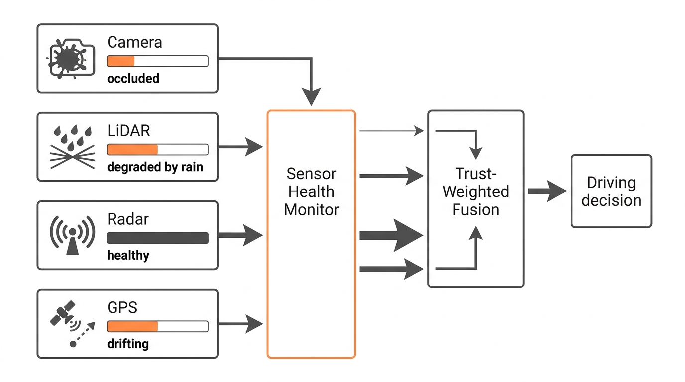

How Can Autonomous Driving Systems Remain Reliable When Sensors Fail?

In one sentence
Real sensors get dirty, blinded, soaked and confused — can a self-driving car work out which of its sensors it can still trust, and keep driving safely on the ones that remain?
What is the problem?
A self-driving car is heading down a motorway in a winter storm. Slush from the truck in front splashes across the front camera, leaving a brown smear over half the image. Heavy snowflakes create thousands of false points in the LiDAR. Between tall buildings, the GPS position jumps by fifteen meters. The radar, meanwhile, works almost perfectly.
The car's perception system combines all of these sensors — this is called sensor fusion. Each sensor has different strengths: cameras see color and read signs, LiDAR measures precise 3D shape, radar measures distance and speed and copes well with rain and fog, GPS says roughly where on the map the car is. Together they are much better than any one alone.
The catch is that many fusion systems are built and trained as if every sensor always arrives intact. They have learned to rely heavily on whichever sensor was most useful in the training data — often the camera or LiDAR. When that sensor quietly degrades, the fused output can get worse than if the bad sensor had simply been switched off. This open problem asks: can the system understand which sensors are trustworthy right now — and keep driving safely when some are not?
Why does it matter?
Sensor problems are not rare edge cases; they are part of daily operation:
- cameras are blinded by low sun, headlights, dirt, rain drops and condensation,
- LiDAR returns are scattered by fog, rain, snow and dust, and some surfaces (black cars, wet roads) reflect poorly,
- GPS drifts or jumps in tunnels, under bridges and between tall buildings,
- any sensor can be knocked out of alignment, overheat, lose its connection, or — a security concern — be deliberately fooled or jammed.
A system that only works when everything is perfect is not really ready for public roads. And because a degraded sensor often still produces data that looks plausible, the failure can be silent.
What would a solution look like?
I imagine adding a sensor health monitor in front of the fusion step. It continuously estimates how trustworthy each sensor is, and the fusion step uses those estimates as weights, leaning on healthy sensors and down-weighting the damaged ones.

How can a monitor tell that a sensor is unhealthy without a ground truth? A few kinds of evidence:
| Evidence | The question it asks |
|---|---|
| Self-check | Does this sensor's data look normal on its own? (A camera image that is mostly one blurry color; a LiDAR scan full of points floating in mid-air.) |
| Cross-check | Does it agree with the other sensors? If radar and LiDAR both see a car at 30 m and the camera sees nothing there, the camera is suspicious. |
| Consistency over time | Does it agree with itself a moment ago? Real cars do not jump fifteen meters between frames; GPS sometimes does. |
| Context | Is it raining, dark, inside a tunnel? Some sensors are known to struggle in some conditions. |
Why is it hard?
- Who checks the checker? When two sensors disagree, which one is wrong? With only two, you often cannot tell. With several, a majority can still be fooled by a shared cause, such as heavy fog affecting both cameras and LiDAR.
- Degradation is gradual. A sensor rarely dies cleanly. It gets slowly worse, and the system must decide when "a bit noisy" becomes "do not trust".
- Learned fusion hides its reliance. Deep fusion networks mix the sensors deep inside the model, so it is not obvious which sensor a decision actually depended on.
- Training data is too clean. Most driving datasets are recorded in good conditions with working sensors, so models never learn what to do when one fails.
- Attacks look like failures. A spoofed GPS signal or a laser aimed at the LiDAR can be designed to look like a healthy sensor that is simply reporting something false.
What has been tried so far
- Classic probabilistic fusion — Kalman filters and their relatives combine sensors weighted by their expected noise, and can reject measurements that are too far from what was expected. Principled, but the noise levels are usually fixed in advance rather than estimated live.
- Deep multi-sensor fusion — networks that fuse camera and LiDAR (and sometimes radar) features, for example in a shared bird's-eye-view map. Very accurate when everything works.
- Robustness benchmarks — studies that systematically corrupt or remove one sensor and measure how much fusion models suffer. They show that many models depend heavily on one modality.
- Training with dropped or corrupted sensors — randomly blanking or damaging inputs during training so the model learns to cope. Helps, but only with the kinds of damage that were simulated.
- Adverse-weather datasets — recordings in fog, snow and rain, which make it possible to test fusion in the conditions that actually break it.
- Redundancy by design — duplicate sensors and independent fallback systems. Effective but expensive.
What I think is still missing is a monitor that estimates sensor trust live, without labels, explains which sensor it distrusts and why, and hands that information to the rest of the car so its behavior can change too (OP-12).
How I would approach it
- Take an existing camera–LiDAR(–radar) fusion model and a driving dataset, and build a set of realistic sensor faults: occlusion, blur, glare, LiDAR noise from rain, sparse returns, GPS drift and sudden jumps.
- Measure how badly the fused model fails under each fault, and how often it would have been better to ignore the damaged sensor entirely.
- Build simple health signals (self-check, cross-check, temporal consistency) and test whether they identify the faulty sensor without being told.
- Use the health scores as fusion weights, and compare against the untouched model and against training with random sensor dropout.
Questions still open
- Can sensor health be estimated reliably without any labels, from the data and the agreement between sensors alone?
- How should the system handle faults that affect several sensors at once, like dense fog?
- Can a fusion model be made to explain which sensor its decision rests on, so that a failure in that sensor is caught immediately?
- How do we tell an innocent failure from a deliberate attack on a sensor — and does it matter for what the car should do? (a question that also appears in BB84, OP-16)
- What is the minimum set of healthy sensors needed to keep driving, and when should the car stop instead? (see OP-12)
- Could vehicles in a fleet share what sensor faults look like, without sharing raw data? (see OP-10, OP-11)
This problem feeds into deciding when not to trust oneself (OP-12) and recognizing never-seen situations (OP-13): a car cannot judge its own understanding if it does not know which of its senses are working.
Work on this together
I am actively looking for collaborators. If you work on sensor fusion, state estimation, adverse-weather perception or sensor security — or you have real vehicle data with messy, imperfect sensors — I would love to hear from you.
Reach out about OP-15Further reading
- Kalman — A New Approach to Linear Filtering and Prediction Problems (Journal of Basic Engineering, 1960)
- Bijelic et al. — Seeing Through Fog Without Seeing Fog: Deep Multimodal Sensor Fusion in Unseen Adverse Weather (CVPR 2020)
- Caesar et al. — nuScenes: A Multimodal Dataset for Autonomous Driving (CVPR 2020)
- Liu et al. — BEVFusion: Multi-Task Multi-Sensor Fusion with Unified Bird's-Eye View Representation (ICRA 2023)
- Cao et al. — Adversarial Sensor Attack on LiDAR-based Perception in Autonomous Driving (ACM CCS 2019)
- Hendrycks & Dietterich — Benchmarking Neural Network Robustness to Common Corruptions and Perturbations (ICLR 2019)